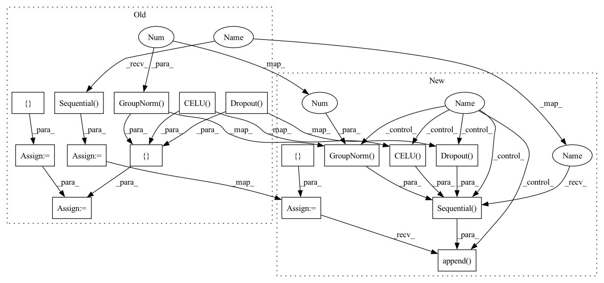

Pattern ID :1664

Before Change
while len(filters) > len(ksize):
ksize = tuple(ksize) + (ksize[-1],)
conv = []
for m, k in zip(filters, ksize):
conv += [
nn.Conv1d(n_in, m, k, padding=k//2),
nn.GroupNorm(1, m),
nn.CELU(),
nn.Dropout(p=dropout_rate) ]
n_in = m
self.conv = nn.Sequential(*conv)
fc = []
for m in fc_layers:
fc += [
After Change
while len(filters) > len(ksize):
ksize = tuple(ksize) + (ksize[-1],)
self.conv = []
for m, k in zip(filters, ksize):
self.conv.append(
nn.Sequential(
nn.Conv1d(n_in, m, k, padding=k//2),
nn.GroupNorm(1, m),
nn.CELU(),
nn.Dropout(p=dropout_rate) ) )
n_in = m
fc = []
for m in fc_layers:
In pattern: SUPERPATTERN
Frequency: 4
Non-data size: 16
Instances
Fragment ID: 3023290
Project Name: keio-bioinformatics/mxfold2
Commit Name: e522f07080b3741577c385ba3b723f75b788a4fc
Time: 2019-12-04
Author: satoken@bio.keio.ac.jp
File Name: dnnfold/fold/layers.py
Class Name: UnpairedLayer
Method Name: __init__
Parent Class: nn.Module
Fragment ID: 3023291
Project Name: mxfold/mxfold2
Commit Name: e522f07080b3741577c385ba3b723f75b788a4fc
Time: 2019-12-04
Author: satoken@bio.keio.ac.jp
File Name: dnnfold/fold/layers.py
Class Name: PairedLayer
Method Name: __init__
Parent Class: nn.Module
Fragment ID: 3023289
Project Name: mxfold/mxfold2
Commit Name: e522f07080b3741577c385ba3b723f75b788a4fc
Time: 2019-12-04
Author: satoken@bio.keio.ac.jp
File Name: dnnfold/fold/layers.py
Class Name: UnpairedLayer
Method Name: __init__
Parent Class: nn.Module